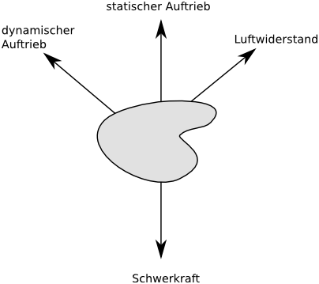

|
|
Institut für Informatik |
Philipp Middendorf |
|
Flake: Echtzeit-Simulation von Windfeldern mit OpenCL zur Modellierung von Schneefall Diplomarbeit von Philipp Middendorf Betreuer: Prof. Dr. Oliver Vornberger PDF-Version der Arbeit |
Die Diplomarbeit entstand in der Arbeitsgruppe Medieninformatik an der Universität Osnabrück im Bereich Computergrafik und beschäftigt sich mit der Simulation von Schneefall.
|
Um Schneeflocken realistische Flugbahnen zu geben, wird mit Hilfe des OpenCL-Frameworks ein Verfahren aus der numerischen Strömungsmechanik auf der Grafikkarte umgesetzt. Das Verfahren erzeugt ein Feld, welches Richtung und Stärke des Windes an jedem Punkt im Simulationsbereich enthält. Mit Hilfe dieses Feldes wird der Einfluss des Windes auf die Schneeflocken berechnet (siehe rechts). Das Feld wird in Echtzeit während des Simulationsverlaufs neu berechnet. Dadurch lassen sich Parameter wie die Windrichtung dynamisch anpassen und könnten auch aus einer Wetterdatenbank den aktuellen Gegebenheiten angepasst werden. Das verwendete Verfahren ist rechnerisch sehr aufwändig, es wird daher eine aktuelle Grafikkarte benötigt, um eine flüssige Simulation zu erhalten. Die Rechengenauigkeit ist jedoch an die Performancecharakteristik der verwendeten Grafikkarte anpassbar. |
Ein zweidimensionales Windfeld, welches um ein Hindernis strömt
|
|

Die auf eine einzelne Flocke wirkenden Kräfte |
Die Schneeflocken werden als Partikelsystem modelliert, d.h. jede Flocke wird mit ihren Eigenschaften einzeln modelliert und bewegt. Die Partikel werden mit Hilfe des OpenGL-Frameworks dargestellt. Geschwindigkeit und Position der Schneeflocken werden direkt auf der Grafikkarte mit Hilfe von OpenCL verändert. In die Berechnung der auf die Flocken wirkenden Kräfte fließen Schwerkraft, Windgeschwindigkeit und Auftrieb ein. Die Schneeflocken beeinflussen sich gegenseitig nicht und lassen sich so unabhängig voneinander parallel abarbeiten. Dies ermöglicht es, eine große Anzahl von Partikeln (bis zu 1.000.000 Objekte) gleichzeitig im Raum zu verteilen und darzustellen. |
| Durch das Auftreffen der Flocken auf ein Hindernis wird zudem die dynamische Generierung einer Schneedecke angestoßen. Es werden die Kollisionen von Flocken mit Hindernissen wie dem Boden gezählt. Diese Statistik wird mit Hilfe des Marching-Cube-Algorithmus in ein geschlossenes Dreiecksmesh umgewandelt. Dieses Dreiecksmesh wird mit Hilfe triplanarer Texturierung mit einer optisch ansprechenden Oberfläche versehen. |
Triplanare Texturierung sorgt dafür, dass steilere Oberflächen eine rauere Textur bekommen |
Klicken, um die Bilder zu vergrößern.
Es wird Flash benötigt. Auf "CC" klicken für Erläuterungen.
Der Code steht öffentlich bei github zur Verfügung. Die strömungsmechanischen Verfahren wurden in eine eigene Bibliothek, flakelib, ausgelagert, um sie einfach in andere Anwendungen integrieren zu können.
| Lizenz: | GPLv3 |
| Betriebssysteme: | Windows, Linux |
| Link zum git-Repository: | http://github.com/pmiddend/flake |
|
Windows-Binärpaket als zip-Datei (26MB): Voraussetzungen: Windows 7 64-Bit, OpenCL-fähige Grafikkarte |
Version 107 |
{kind=link}
{kind=link}